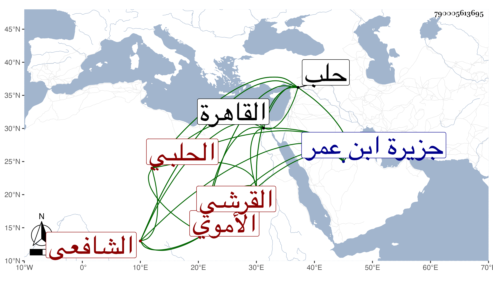

0902Sakhawi.DawLamic.ITO20230111-ara1.EIS1600.790005613695
Biography ID: 790005613695
646
محمد بن عمر بن أبي بكر بن محمد بن أحمد بن محمد بن عبد القاهر بن هبة الله بن عبد القادر بن عبد الواحد بن هبة الله ابن طاهر بن يوسف بن محمد الضياء بن الزين بن الشرف بن التاج أبي المكارم بن الكمال أبي العباس بن الزين أبي عبد الله القرشي الأموي الحلبي الشافعي والد عمر وأبي بكر ويعرف كسلفه بابن النصيبي نسبة لبلد نصيبين جزيرة ابن عمر . من بيت كبير معروف بالرياسة والجلالة يقال إنهم من ذرية عمر بن عبد العزيز . ولد كما قرأته بخطه في أواخر سنة إحدى وثمانين وسبعمائة بحلب ونشأ بها فحفظ القرآن وصلى به في جامعها الأموي والمنهاج وألفية النحو وعرضها على ابن خطيب المنصورية قبل الفتنة واشتغل قليلا ولازم البرهان الحافظ وحج معه في سنة ثلاث وثمانمائة وكانت الوقفة الجمعة وسمع على ابن المرحل وابن صديق والسيد العز الإسحاقي ومحمد بن محمد بن محمد ابن الطباخ وغيرهم وولي ببلده توقيع الدست وقضاء العسكر بل وتدريس السيفية والإعادة بالظاهرية وناب في كتابة سرها بل عرضت عليه مرة استقلالا فامتنع كل ذلك مع دماثة الأخلاق والثروة والعقل والحشمة والرياسة ، وقد حدث سمع منه الفضلاء وقدم القاهرة فقرأت عليه بعض الأجزاء ، ورجع في محفة لكونه كان متوعكا فأقام ببلده حتى مات في ذي القعدة سنة سبع وخمسين ودفن بحوش بالقرب من الدقماقية ، وكتب لشيخنا حين كان بحلب من قوله :
| العبد طولب بالجواب عن الذي | لم يخف عنكم من سؤال السائل |
| فانعم به لا زلت تنعم مفضلا | بفوائد وفواضل وفضائل |
